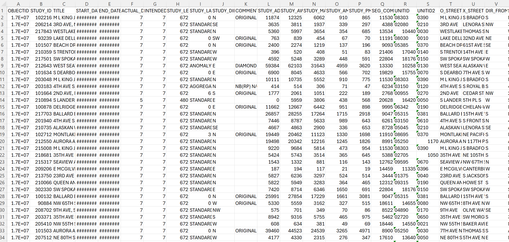
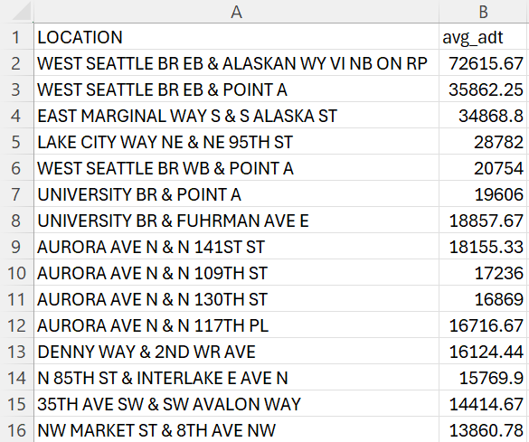

HTML/CSS Public Data Review
Reviewing a Messy Dataset
Why data cleaning shapes what the public sees
A polished data visualization can look simple, objective, and complete. But before the public sees a chart, the data has already gone through filtering, cleaning, standardizing, aggregation, and design choices. This page reviews that hidden process using Seattle traffic count data as an example.
Main Review Claim
Data cleaning is necessary because raw data is often too messy to communicate clearly. At the same time, cleaning is never neutral. Every processing decision affects what becomes visible, what gets removed, and what the final visualization seems to prove.
1. The raw dataset looks complete, but it is difficult to read
The raw traffic count data contains many columns, technical field names, date fields, street variables, and traffic measurements. This kind of data is useful, but it is not immediately public facing. A viewer would need time, context, and technical knowledge to understand which variables matter.

2. Cleaning turns messy data into a readable structure
In my traffic count project, the dataset was filtered to include only 2026 records. I selected the fields needed for the analysis, cleaned and standardized location names, created a unified location field, and aggregated traffic volume by location using average daily traffic.
This made the data easier to visualize. However, it also narrowed the dataset. The final table no longer shows every original field, every record, or every possible interpretation. It shows the version of the data that was prepared for one specific analytical purpose.

Method: How the traffic data was processed
The raw Traffic Study Flow Counts dataset was processed in Python using pandas and NumPy. I first loaded the full CSV file, checked the dataset shape and column names, and filtered the records to include only rows where the study year was 2026.
After filtering, I kept only the columns needed for the visualization: origin street, cross street, and average daily traffic. I cleaned the street fields by converting them to text, removing extra whitespace, and replacing fake “nan” text values with real missing values. I also converted the traffic count field into numeric form so it could be aggregated correctly.
To create readable location labels, I combined the origin street and cross street into one location field. Then I grouped the data by location, calculated the mean average daily traffic for repeated locations, sorted the results from highest to lowest traffic, rounded the values, and selected the top fifteen locations for the final Flourish visualization.
What gets hidden during processing?
The cleaned table is easier to understand, but it hides several important details: records outside 2026, unused columns, differences between individual studies, variation within the same location, and the fact that the final view only includes the top fifteen locations. This is why data processing should be documented clearly.
3. The final visualization looks certain because the messiness is gone
The final visualization presents the top Seattle traffic count locations by average daily traffic. It is much easier for the public to read than the raw spreadsheet. The labels, sorting, and bars guide attention immediately.
But the chart should not be read as the full reality of Seattle traffic. A more accurate interpretation is that it shows the highest average daily traffic locations within a filtered and processed version of the 2026 traffic count data.

Why this matters for public data
Public data is often treated as transparent simply because it is available online. But access does not automatically create understanding. If the public only sees the final chart, they may miss the cleaning and processing choices that shaped the result.
This is why good visualization should communicate both the conclusion and the method. Clean visuals are valuable, but they should not hide the path from raw data to public meaning.